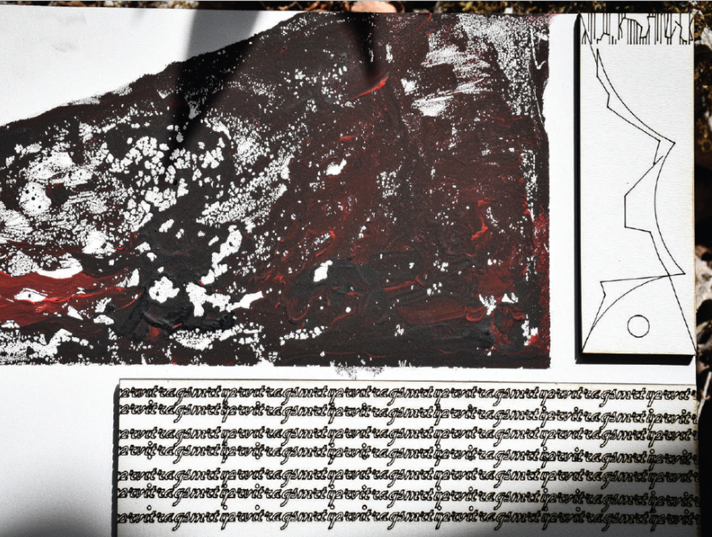
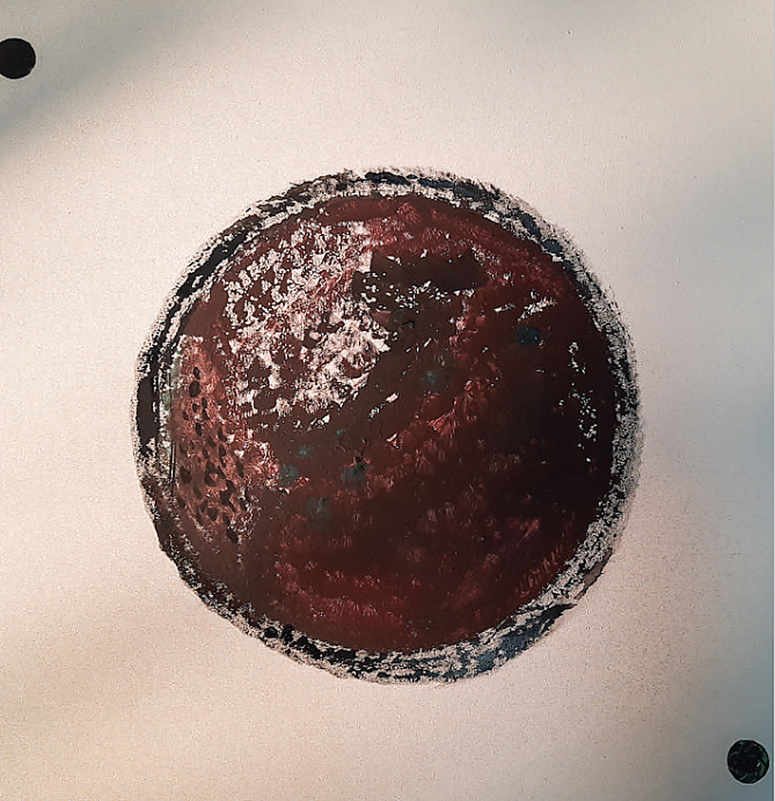

01 / PAINTINGS
BEETHOVENFRIES — DEVELOPMENT OF POARCH FORMS
PAINTING / MIXED MEDIA / 2021
Developed for the interdisciplinary exhibition
Musical Architecture of Ludwig van Beethoven,
the project explores the translation of music into
visual and spatial form.
Drawing on the Vienna Secession and Gustav Klimt’s Beethoven Frieze, the work develops a three-part narrative combining image and text to interpret Beethoven’s Ninth Symphony and its broader cultural and artistic references.
Drawing on the Vienna Secession and Gustav Klimt’s Beethoven Frieze, the work develops a three-part narrative combining image and text to interpret Beethoven’s Ninth Symphony and its broader cultural and artistic references.
LOCATION
Podgorica, Montenegro
YEAR
2021
TYPE
Painting / Mixed Media
AUTHOR
Šćepan Popović
EXHIBITED AT
University of Montenegro
Faculty of Architecture, Podgorica
Faculty of Architecture, Podgorica


